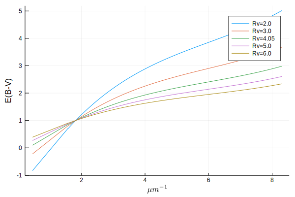
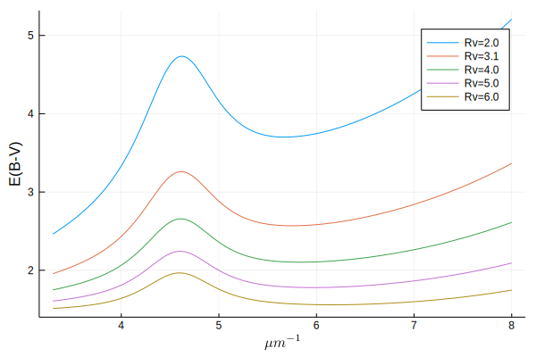
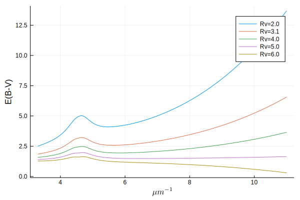
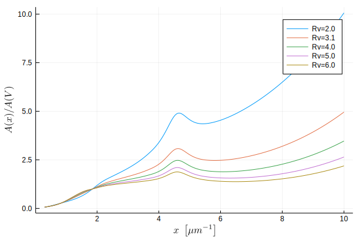
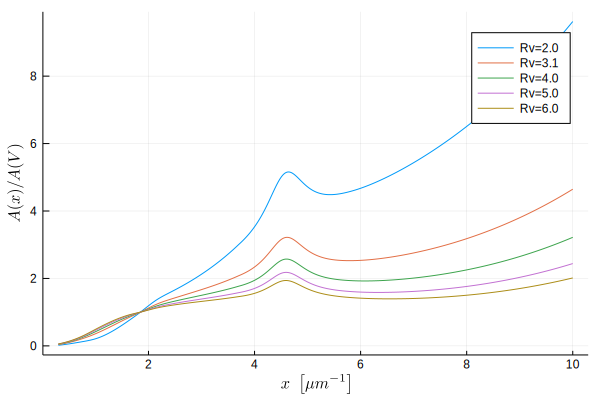
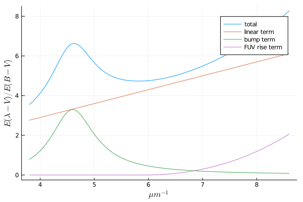

Color laws
The following empirical laws allow us to model the reddening of light as it travels to us. The law you use should depend on the type of data you have and the goal of its use. CCM89 is very common for use in removing extinction from stellar observations, but CAL00, for instance, is suited for galaxies with massive stars. Look through the citations and documentation for each law to get a better idea of what sort of physics it targets.
Usage
Color laws are constructed and then used as a function for passing wavelengths. Wavelengths are assumed to be in units of angstroms.
julia> CCM89(Rv=3.1)(4000)
1.464555702942584
These laws can be applied across higher dimension arrays using the . operator
julia> CCM89(Rv=3.1).([4000, 5000])
2-element Array{Float64,1}:
1.464555702942584
1.1222468788993019
these laws return magnitudes, which we can apply directly to flux by mulitplication with a base-2.5 logarithmic system (because astronomers are fun):
To make this easier, we provide a convenience redden and deredden functions for applying these color laws to flux measurements.
julia> wave = range(4000, 5000, length=4)
4000.0:333.3333333333333:5000.0
julia> flux = 1e-8 .* wave .+ 1e-2
0.01004:3.3333333333333333e-6:0.01005
julia> redden.(CCM89, wave, flux; Av=0.3)
4-element Array{Float64,1}:
0.006698646015454752
0.006918253926353551
0.007154659823737299
0.007370491272731541
julia> deredden.(CCM89(Rv=3.1), wave, ans; Av=0.3) ≈ flux
true
Advanced Usage
The color laws also have built-in support for uncertainties using Measurements.jl.
julia> using Measurements
julia> CCM89(Rv=3.1).([4000. ± 10.5, 5000. ± 10.2])
2-element Array{Measurement{Float64},1}:
1.4646 ± 0.0033
1.1222 ± 0.003
and also support units via Unitful.jl and its subsidiaries. Notice how the output type is now Unitful.Gain.
julia> using Unitful, UnitfulAstro
julia> mags = CCM89(Rv=3.1).([4000u"angstrom", 0.5u"μm"])
2-element Array{Gain{Unitful.LogInfo{:Magnitude,10,-2.5},:?,Float64},1}:
1.4645557029425837 mag
1.1222468788993019 mag
You can even combine the two above to get some really nice workflows exploiting all Julia has to offer! This example shows how you could redden some OIR observational data with uncertainties in the flux density.
julia> using Measurements, Unitful, UnitfulAstro
julia> wave = range(0.3, 1.0, length=5)u"μm"
(0.3:0.175:1.0) μm
julia> err = randn(length(wave))
5-element Array{Float64,1}:
0.2972879845354616
0.3823959677906078
-0.5976344767282311
-0.01044524463737564
-0.839026854388764
julia> flux = @.(300 / ustrip(wave)^4 ± err)*u"Jy"
5-element Array{Quantity{Measurement{Float64},𝐌*𝐓⁻²,Unitful.FreeUnits{(Jy,),𝐌*𝐓⁻²,nothing}},1}:
37037.04 ± 0.3 Jy
5893.14 ± 0.38 Jy
1680.61 ± -0.6 Jy
647.598 ± -0.01 Jy
300.0 ± -0.84 Jy
julia> redden.(CCM89, wave, flux; Av=0.3)
5-element Array{Quantity{Measurement{Float64},𝐌*𝐓⁻²,Unitful.FreeUnits{(Jy,),𝐌*𝐓⁻²,nothing}},1}:
22410.8 ± 0.18 Jy
4229.74 ± 0.27 Jy
1337.12 ± 0.48 Jy
554.3349 ± 0.0089 Jy
268.31 ± 0.75 Jy
Parametric Extinction Laws
These laws are all parametrized by the selective extinction Rv. Mathematically, this is the ratio of the total extinction by the reddening
and is loosely associated with the size of the dust grains in the interstellar medium.
Index:
Clayton, Cardelli and Mathis (1989)

DustExtinction.CCM89 — TypeCCM89(;Rv=3.1)Clayton, Cardelli and Mathis (1989) dust law.
Returns E(B-V) in magnitudes at the given wavelength relative to the extinction at 5494.5 Å. The default support is [1000, 33333]. Outside of that range this will return 0. Rv is the selective extinction and is valid over [2, 6]. A typical value for the Milky Way is 3.1.
References
O'Donnell 1994

DustExtinction.OD94 — TypeOD94(;Rv=3.1)O'Donnell (1994) dust law.
This is identical to the Clayton, Cardelli and Mathis (1989) dust law, except for different coefficients used in the optical (3030.3 Å to 9090.9 Å).
References
See Also
Calzetti et al. (2000)

DustExtinction.CAL00 — TypeCAL00(;Rv=4.05)Calzetti et al. (2000) Dust Law.
Returns E(B-V) in magnitudes at the given wavelength. λ is the wavelength in Å and has support over [1200, 22000]. Outside of that range this will return 0.
Calzetti et al. (2000) developed a recipe for dereddening the spectra of galaxies where massive stars dominate the radiation output. They found the best fit value for such galaxies was 4.05±0.80.
References
Valencic, Clayton, & Gordon (2004)

DustExtinction.VCG04 — TypeVCG04(;Rv=3.1)Valencic, Clayton, & Gordon (2004) dust law.
This model applies to the UV spectral region all the way to 912 Å. This model was not derived for the optical or NIR.
References
Gordon, Cartledge, & Clayton (2009)

DustExtinction.GCC09 — TypeGCC09(;Rv=3.1)Gordon, Cartledge, & Clayton (2009) dust law.
This model applies to the UV spectral region all the way to 909.09 Å. This model was not derived for the optical or NIR.
References
Fitzpatrick (1999)

DustExtinction.F99 — TypeF99(;Rv=3.1)Fitzpatrick (1999) dust law. Returns E(B-V) in magnitudes at the given wavelength relative to the extinction. This model applies to the UV and optical to NIR spectral range. The default support is [1000, 33333] Å. Outside of that range this will return
- Rv is the selective extinction and is valid over [2, 6]. A typical value for
the Milky Way is 3.1.
References
Fitzpatrick (2004)

DustExtinction.F04 — TypeF04(;Rv=3.1)Fitzpatrick (2004) dust law. Returns E(B-V) in magnitudes at the given wavelength relative to the extinction. This model applies to the UV and optical to NIR spectral range. The default support is [1000, 33333] Å. Outside of that range this will return
- Rv is the selective extinction and is valid over [2, 6]. A typical value for
the Milky Way is 3.1. Equivalent to the F99 model with an updated NIR Rv dependence See also Fitzpatrick & Massa (2007, ApJ, 663, 320)
References
API/Reference
DustExtinction.redden — Functionredden(::ExtinctionLaw, wave, flux; Av=1)
redden(::Type{ExtinctionLaw}, wave, flux; Av=1, law_kwargs...)Redden the given flux using the given extinction law at the given wavelength.
If wave is <:Real then it is expected to be in angstrom and if it is <:Unitful.Quantity it will be automatically converted. Av is the total extinction value. The extinction law can be a constructed struct or a Type. If it is a Type, law_kwargs will be passed to the constructor.
Examples
julia> wave = 3000; flux = 1000;
julia> redden(CCM89, wave, flux; Rv=3.1)
187.38607779757183
julia> redden(CCM89(Rv=3.1), wave, flux; Av=2)
35.11354215235764See Also
DustExtinction.deredden — Functionderedden(::ExtinctionLaw, wave, flux; Av=1)
deredden(::Type{ExtinctionLaw}, wave, flux; Av=1, law_kwargs...)Deredden the given flux using the given extinction law at the given wavelength.
If wave is <:Real then it is expected to be in angstrom and if it is <:Unitful.Quantity it will be automatically converted. Av is the total extinction value. The extinction law can be a constructed struct or a Type. If it is a Type, law_kwargs will be passed to the constructor.
Examples
julia> wave = 3000; flux = 187.386;
julia> deredden(CCM89, wave, flux; Rv=3.1)
999.9995848273642
julia> deredden(CCM89(Rv=3.1), wave, flux; Av=2)
5336.573541539394See Also
DustExtinction.ExtinctionLaw — TypeDustExtinction.ExtinctionLawThe abstract super-type for dust extinction laws. See the extended help (??DustExtinction.ExtinctionLaw from the REPL) for more information about the interface.
Extended Help
Interface
Here's how to make a new extinction law, called MyLaw
- Create your struct. We strongly recommend using
Parameters.jlto facilitate creating keyword argument constructors if your model is parameterized, which allows convenient usage withreddenandderedden.
struct MyLaw <: DustExtinction.ExtinctionLaw end- (Optional) Define the limits. This will default to
(0, Inf). Currently, this is used within theDustExtinction.checkboundsfunction and in the future will be used for plotting recipes.
DustExtinction.bounds(::Type{<:MyLaw}) = (min, max)- Define the law. You only need to provide one function which takes wavelength as angstrom. If your law is naturally written for inverse-micron, there is a helper function
aa_to_invum.
(::MyLaw)(wavelength::Real)- (Optional) enable
Unitful.jlsupport by adding this function. If you are building a new law withinDustExtinction.jlyou can add your law to the code-gen list insideDustExtinction.jl/src/DustExtinction.jl.
(l::MyLaw)(wavelength::Unitful.Quantity) = l(ustrip(u"angstrom", wavelength)) * u"mag"DustExtinction.bounds — FunctionDustExtinction.bounds(::ExtinctionLaw)::Tuple
DustExtinction.bounds(::Type{<:ExtinctionLaw})::TupleGet the natural wavelengths bounds for the extinction law, in angstrom
Fittable Extinction Laws
Fitzpatrick & Massa (1990)

DustExtinction.FM90 — TypeFM90(;c1=0.10, c2=0.70, c3=3.23, c4=0.41, x0=4.60, gamma=0.9)
FM90(coeffs, x0=4.60, gamma=0.9)Fitzpatrick & Massa (1990) generative model for ultraviolet dust extinction. The default values are the published values for the Milky Way average.
Parameters
c1- y-intercept of linear termc2- slope of liner termc3- amplitude of 2175 Å bumpc4- amplitude of FUV risex0- centroid of 2175 Å bumpgamma- width of 2175 Å bump
If λ is a Unitful.Quantity it will be automatically converted to Å and the returned value will be UnitfulAstro.mag.
Examples
julia> model = FM90(c1=0.2, c2=0.7, c3=3.23, c4=0.41, x0=4.6, gamma=0.99);
julia> model(1500)
5.2521258452800135
julia> FM90()(1500)
5.152125845280013
julia> FM90(c1=0.2, c2=0.7, c3=3.23, c4=0.41, x0=4.6, gamma=0.99).([1000, 1200, 1800])
3-element Array{Float64,1}:
12.562237969522851
7.769215017329513
4.890128210972148
Extended Help
The model has form $c_1 + c_2x + c_3D(x; \gamma, x_0) + c_4 F(x)$ where $x$ is the wavenumber in inverse microns, $D(x)$ is a Drude profile (modified Lorentzian) used to model the 2175 Å bump with the scale-free parameters $x_0$ (central wavenumber) and $\gamma$ (damping coefficient), and $F(x)$, a piecewise function for the far-UV. Note that the coefficients will change the overall normalization, possibly changing the expected behavior of reddening via the parameter $A_V$.
References